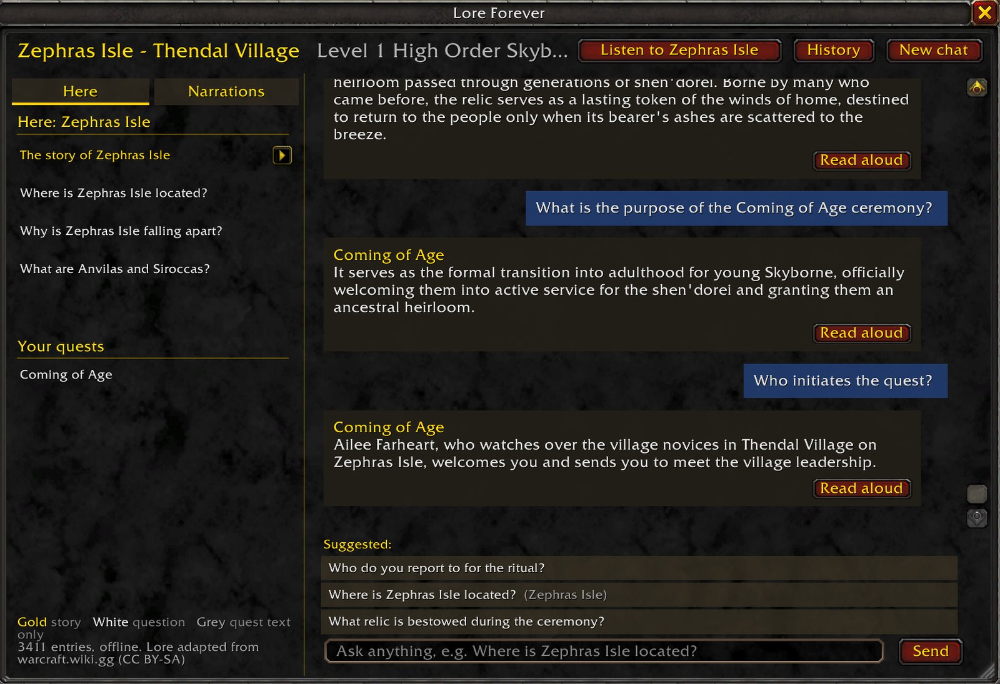
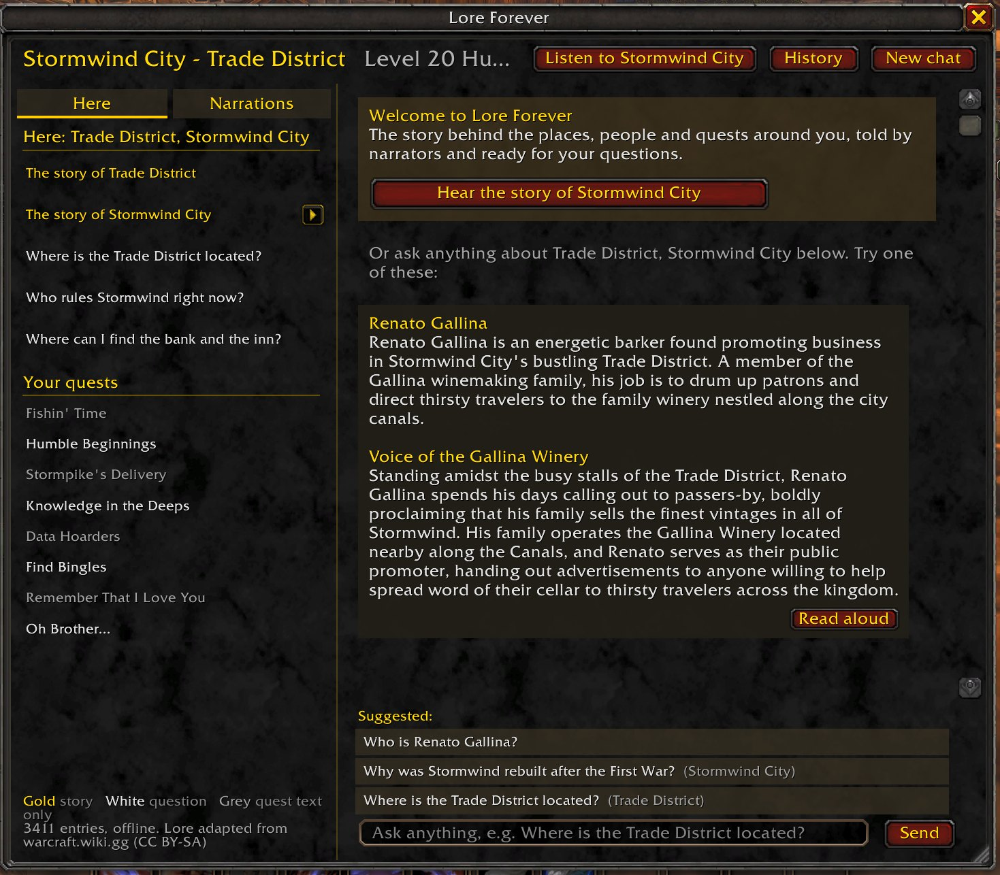
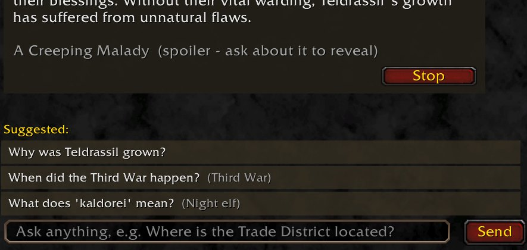

Elwynn Forest
Northshire, Goldshire and the farms, mines and camps around them
"Why are there kobolds inside all the mines?"
"Who are the bandits wearing red masks?"
Hear the story of where you are, and ask about the people, places and quests around you, right in game.
The capitals, starting zones and dungeons, 43 of the places you'll visit most, come with narrated intros, plus 109 narrated answers to the questions new players ask first. Press Listen, or turn on flight narration and hear each zone's story while you fly over it. Everywhere else, Listen reads the answer aloud in the game voice.
Want a different narrator, or to lend your own voice? See narration voices.
Want Lore Forever in your language? See the languages, or help translate it into yours.
Three of the narrations, exactly as they play in game:
Stormwind City. Stormwind City is the bustling capital of the Kingdom of Stormwind and the premier human bastion in the world following the fall of Lordaeron. Rebuilt from ashes by the Stonemasons Guild after its destruction in the First War, its magnificent white stone districts now house the heart of the Grand Alliance. Beneath its majestic canals and cathedrals, however, the city grapples with the sudden disappearance of King Varian Wrynn and brewing political intrigue. Founded over a millennium ago by the descendants of the Arathi, Stormwind stood for generations as a flourishing, self-sufficient realm. That golden era ended when the Orcish Horde poured through the Dark Portal, laying waste to the southern continent and razing the capital to the ground in the First War. Survivors led by Sir Anduin Lothar fled north across the Great Sea to Lordaeron. Following the Horde's defeat in the Second War, King Terenas Menethil II and the Alliance funded a complete reconstruction. The Stonemasons Guild painstakingly rebuilt the capital into New Stormwind—a gleaming citadel of polished white stone and canal-laced boroughs.
Zephras Isle. Zephras Isle is a flying island suspended within Skywall, the Elemental Plane of air. It serves as the ancestral starting home of the Skyborne, whose society now faces an existential crisis as the island's sustaining magic steadily erodes. With contact severed from neighboring sky-realms, its inhabitants struggle against elemental collapse and arriving refugees. Zephras Isle is an isolated landmass adrift in the endless winds of Skywall. For generations, the Skyborne lived here alongside native air elementals who helped preserve the magical currents holding the isle aloft. However, several centuries ago, those elemental stewards vanished entirely. Deprived of their presence and guardianship, the latent enchantments upholding the land have slowly begun to fail, causing Zephras to slowly fracture and destabilize.
Durotar. Durotar is the arid, red-rock homeland founded by Warchief Thrall following the Third War, named in honor of his father, Durotan. Bounded by the Southfury River and the Great Sea, it serves as the heartland of the New Horde and the proving ground for young orcs and Darkspear trolls. Within its harsh canyons lie fortified settlements like Razor Hill, the sprawling warrior city of Orgrimmar, and entrenched hostile holdouts ranging from quilboar tribes to stranded Alliance troops. When Thrall led his people across the Great Sea to Kalimdor, he deliberately sought an untamed frontier where the orcs could carve out an honest existence through labor and grit rather than conquest. Durotar's cracked red soil, baked gullies, and towering red-rock spires remind the orcs deeply of Draenor before its destruction. While the climate is unforgiving, offering little arable land and sparse water, the Horde embraced the landscape's natural defense and austere majesty. Bordered to the west across the Southfury River by the open Barrens and to the north by the ruined wilderness of Azshara, Durotar stands as living proof that the orcs have forged their own destiny.
The panel already knows your zone, your quests and your target, and suggests questions to start with. Type your own and matching questions drop down as you go. Every answer ends with follow-ups, so you can keep pulling the thread.
Who is Edwin VanCleef?
He is the mastermind behind the Defias Brotherhood and the former Guildmaster of the Stonemasons. He is the master architect who rebuilt Stormwind City after the Horde destroyed it during the First War.





Every zone, city and dungeon you can reach up to level 30: the quests, NPCs, subzones and bosses, about 3,460 entries in all. That includes the content that's new in Forever. Above level 30 you still get place lore (the zone, its subzones and notable characters), for when you wander ahead. Built for the WoW Forever beta and the full launch on November 4, 2026.
Northshire, Goldshire and the farms, mines and camps around them
"Why are there kobolds inside all the mines?"
"Who are the bandits wearing red masks?"
Home of the Skyborne
"Who are the Skyborne?"
"Why is Zephras Isle falling apart?"
Beneath Moonbrook, home of the Defias Brotherhood
"What is being built in Ironclad Cove?"
"Where is the entrance to the Deadmines located?"
One of Forever's new dungeons, primer included
"What bosses are inside the Hall of Thanes?"
"How do I gain access to the Hall of Thanes?"
Place lore for the rest of the world: each zone, its subzones and notable characters. Tell us where you want full quest and NPC lore next.
Vote on DiscordEver finish a quest chain and realize you have no idea why you just killed forty gnolls? Lore Forever gives you the story behind what you're doing, without alt-tabbing to a wiki.
The first time you log in, pick a key to open it, like M for the map. Hover over an NPC and press it to read about them. The panel already knows where you are and what you're working on: it suggests questions about your zone and your quests, and you can type your own. Answers link to related people, places and events, so you can keep pulling the thread as far as you like.
/lore nudge./lore.Walk into a dungeon and chat links a primer: why you're there, the bosses in order, and what beating the final boss means (tagged as a spoiler, so it's your call).
Forever has its own timeline, so Lore Forever sticks to it: no story from retail's later expansions, and where Forever and Classic disagree, Forever wins.
Everything is inside the add-on. No account, no extra app, nothing to sign up for.
/lore or /lf | Open or close the panel |
/lore <question> | Ask straight from chat, e.g. /lore why is westfall so poor |
/lore key | Choose the key that opens the panel (/lore key narrate: a key that plays narration) |
/lore narrations | Every recorded narration, your starting area first |
/lore options | Settings: tooltips, hints, flight narration |
/lore primer | Dungeon primer for where you are |
/lore listen | Read the last answer aloud |
/lore narrate | Flight narration on or off |
/lore help | List all commands |
Lore Forever is on CurseForge, so the app can install it and keep it updated:
_classic_beta_ folder, or use the installer or zip below.LoreForever-Setup.exe.
It's signed; Windows shows the publisher as Mei Liu._classic_beta_\Interface\AddOns.
No admin rights needed. To update later, run a newer installer./reload if you're already in game).LoreForever.zip._classic_beta_\Interface\AddOns (create Interface\AddOns
if it isn't there). On Windows the default is
C:\Program Files (x86)\World of Warcraft\_classic_beta_\Interface\AddOns....\AddOns\LoreForever\LoreForever.toc. A doubled folder like
AddOns\LoreForever\LoreForever\ won't load./reload if you're already in game).On your first login it asks you to pick a key for the panel. You can change it later with /lore key.
Not showing up? On the character screen, click AddOns and tick Load out of date AddOns.
/lore help now ends with where to ask questions, request lore and report bugs: loreforeverwow.com/discordOne email when a new version is out. Unsubscribe anytime. Rather chat? News goes to the Discord too.